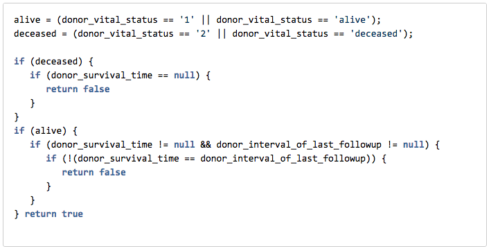
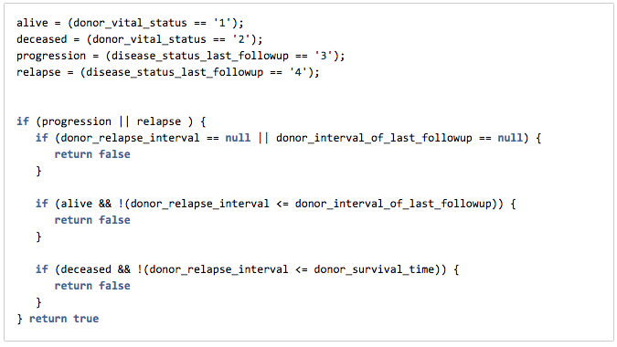

Donor Clinical Data Guidelines
Changes to Data Dictionary for Release 20 include:
- Implementation of new rules requiring values for certain donor clinical fields
- Validation checks to ensure that the clinical data provided is correct
Why?
- We have received many requests from users of the DCC Data Portal about the lack of clinical data for some ICGC projects, making it difficult to carry out a complete analysis of different cancer types (i.e., survival analysis). A review of Release 19 data also found discrepancies in the clinical data for some projects. In an effort to correct this, we implemented validation rules to identify and flag these discrepancies and any empty required data fields.
The validation rules concern mainly the disease status at last followup (in particular, if the patient progressed or relapsed), and the patient's vital status. With the exception of "donor_primary_treatment_interval", there have been no new fields added to the Data Dictionary since Release 19.
| Field | Definition | Terms |
|---|---|---|
| donor_vital_status | Donor's last known vital status. |
|
| disease_status_last_followup | Donor's last known disease status. |
|
| donor_relapse_interval | If the donor was clinically disease free following primary treatment, and then relapse or progression (for liquid tumours) occurred afterwards, then "donor_relapse_interval" is the length of the disease free interval (in days). | |
| donor_survival_time | How long has the donor survived since primary diagnosis, in days. If source data was collected in months, use a multiplier value of '30.44' to convert values to days when preparing your submission. | |
| donor_interval_of_last_followup | Interval from the primary diagnosis date to the last followup date. ICGC requests that patients be followed up every 6 months while alive. | |
| donor_primary_treatment_interval (New Field) | Interval between primary diagnosis and primary treatment, in days. |
Summary of Donor Clinical Field requirements:
This table summarizes the required fields (for data completeness), and describes the rules which ensure the clinical data is correct
|
disease_status_last_followup |
|||
|
complete remission partial remission stable NED (no evidence of disease) |
progression relapse |
||
|
donor_vital_status |
alive |
donor_relapse_interval = donor_survival_time = donor_interval_of_last_followup = Checks: If data provided for "donor_survival_time" and "donor_interval_of_last_followup":
|
donor_relapse_interval = donor_survival_time = donor_interval_of_last_followup = Checks:
If data provided for "donor_survival_time":
|
| deceased |
donor_relapse_interval = donor_survival_time = donor_interval_of_last_followup = |
donor_relapse_interval = donor_survival_time = donor_interval_of_last_followup = Checks:
|
|


Clinical Data Events and Time Relationship:
This diagram summarizes how the different donor clinical events relate to time.
If the patient is alive, the "donor_survival_time" should be equal to the "donor_interval_of_last_followup" (124 days)
However, if the the patient is deceased, the "donor_survival_time" (163 days) should be less than (or equal) to the "donor_interval_of_last_followup" (175 days)
Description of Script Restrictions added to Donor File for Release 20:
Five script restrictions have been added:
1.
Field: "donor_interval_of_last_followup"
Description:
If the disease status at last followup was progression or relapse:
-
- "donor_interval_of_last_followup" field is required
2.
Field: "donor_survival_time"
Description:
When donor is deceased:
- The field "donor_survival_time" is required.
- When "donor_interval_of_last_followup" has a value, it must be greater than or equal to "donor_survival time".
When donor is alive:
- If "donor_survival_time" and "donor_interval_of_last_followup" have values, "donor_survival_time" must equal "donor_interval_of_last_followup"

3.
Field: "donor_relapse_interval"
Description:
If the donor's disease status at last followup was progression or relapse:
- The field "donor_relapse_interval" is required.
- If the donor is alive:
- "donor_relapse_interval" should be less than or equal to "donor_interval_of_last_followup"
- If donor is deceased:
- "donor_relapse_interval" should be less then or equal to "donor_survival_time".

4.
Field: "donor_primary_treatment_interval"
Description:
The donor_primary_treatment_interval should be less than or equal to donor_survival_time
If the patient's disease status at last followup was progression or relapse:
If the patient is alive:
- The combination of the donor_primary_treatment_interval and donor_relapse_interval should be less than or equal to the donor's interval of last followup.
If the patient is deceased:
- The combination of the donor_primary_treatment_interval and donor_relapse_interval should be less than or equal to the donor's survival time
5.
Field: "donor_age_at_diagnosis"
Description:
- If the donor is older than 90 years, default value of 90 should be used.
- The donor's age at diagnosis should be less than or equal to the donor's age at enrolment
6.
Field: "donor_age_at_enrollment"
Description:
- If the donor is older than 90 years, default value of 90 should be used.
- The donor's age at enrolment should be less than or equal to the donor's age at last_followup